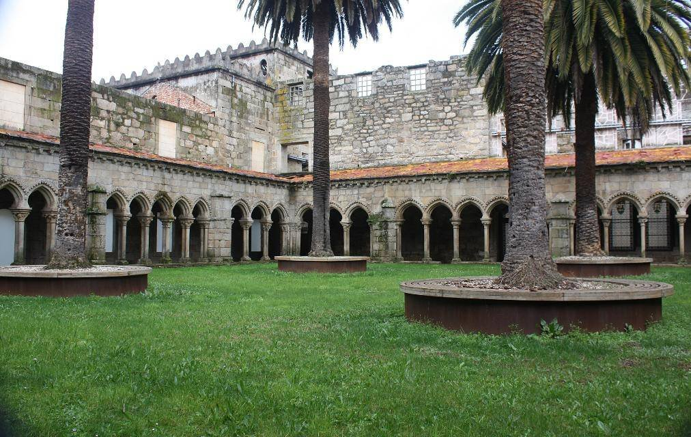
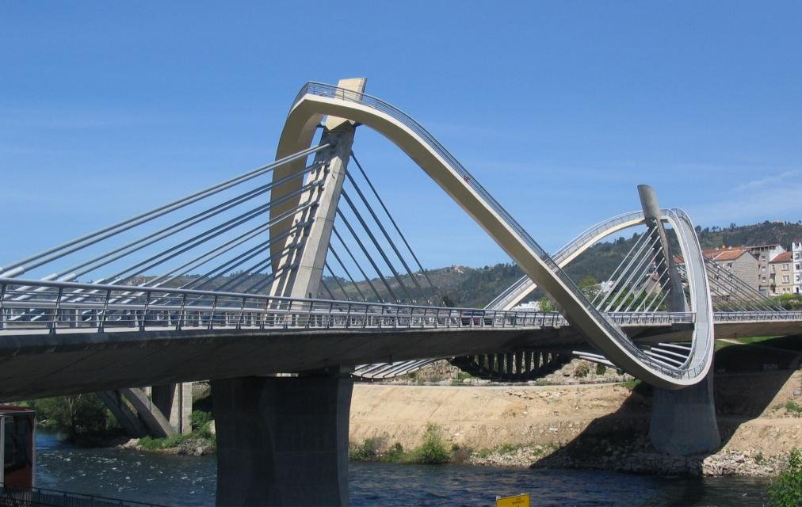
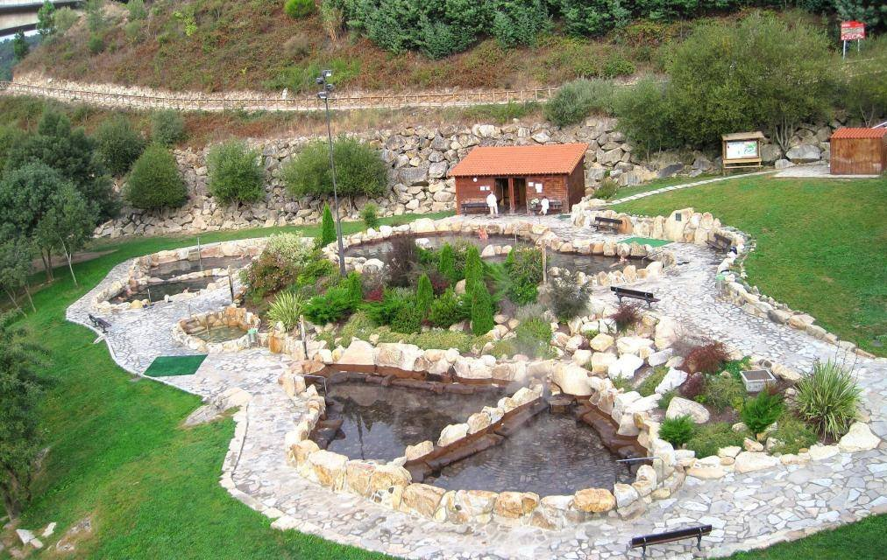
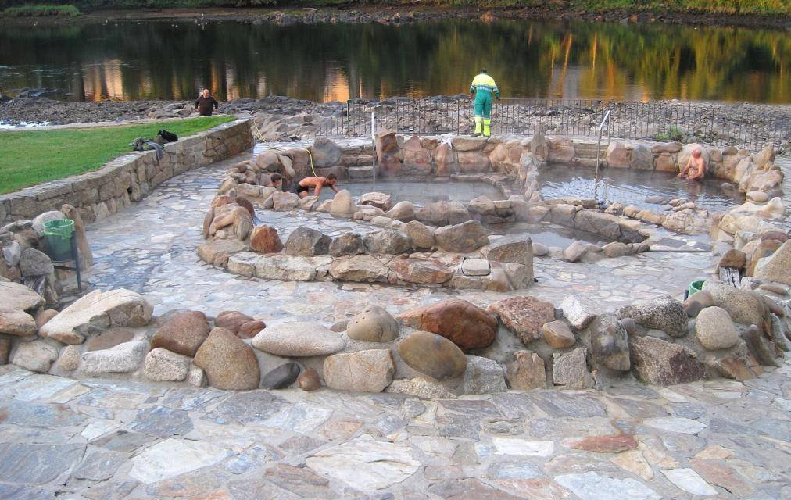
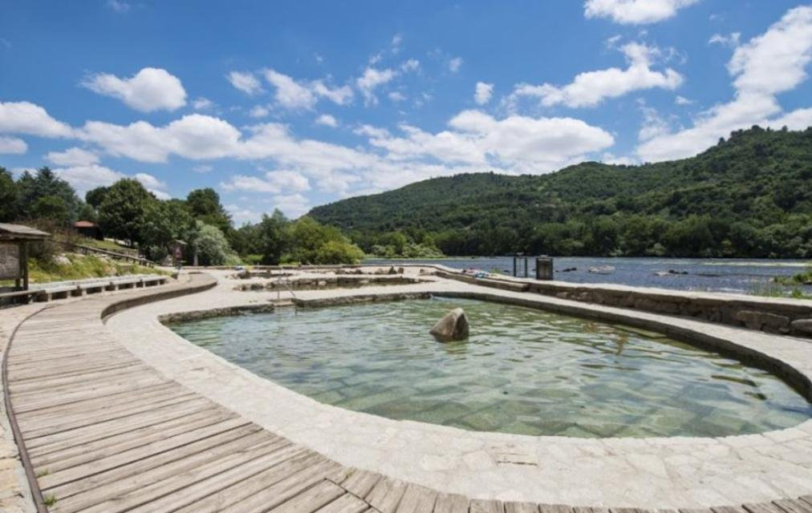
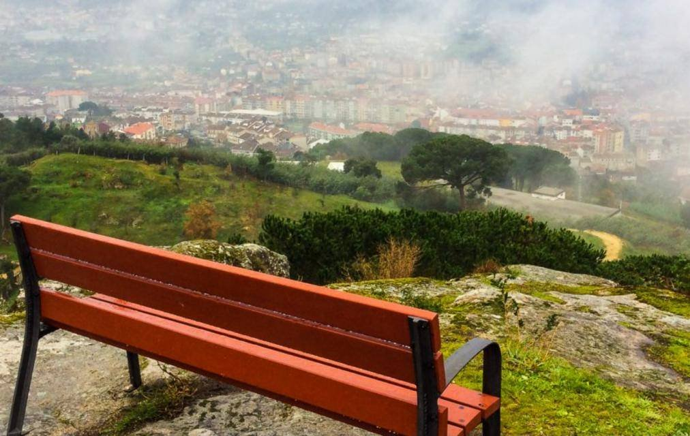
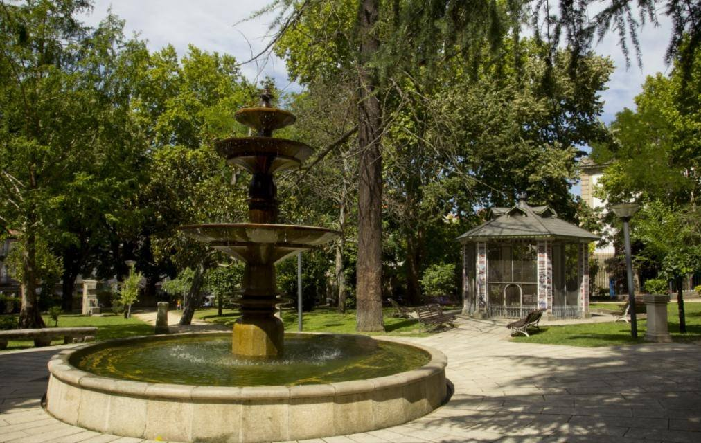
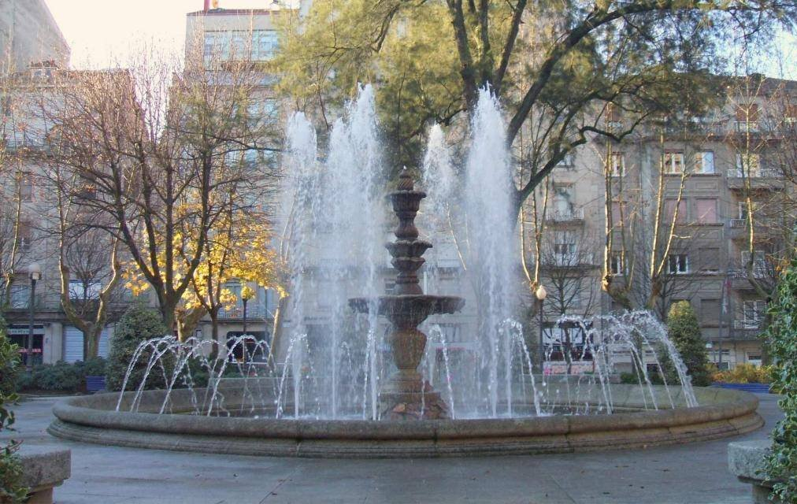
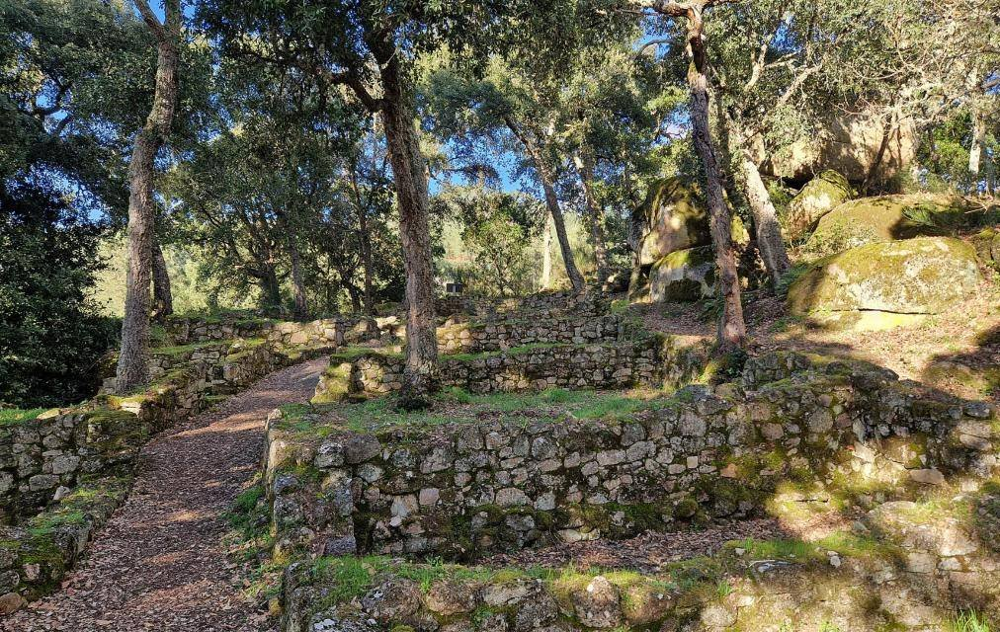
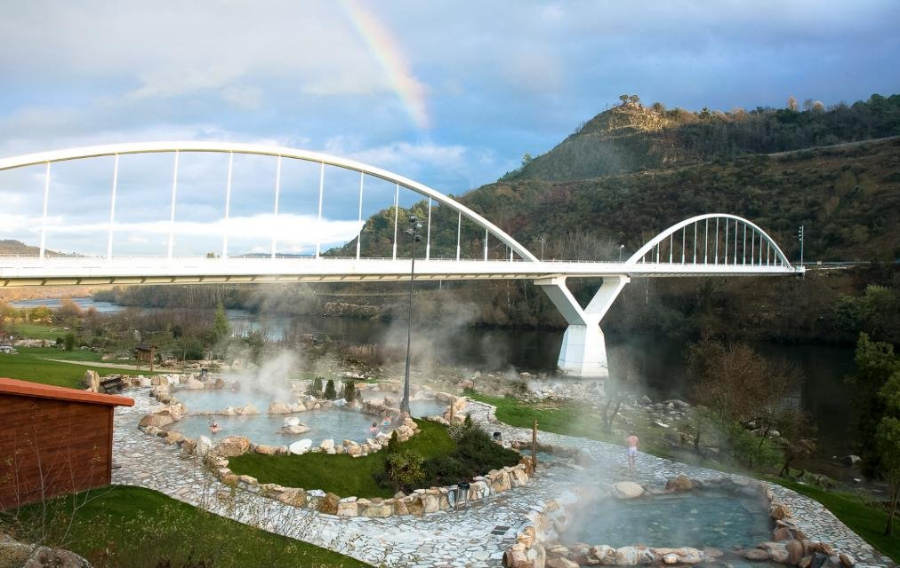

Monumentos, parques y termas de Ourense para conocer la ciudad más allá del casco viejo.

Foto: Lameiro (CC BY-SA 4.0), Wikimedia Commons
Abrir en Google Maps

Foto: Piotr Przybyszewski (CC BY 3.0), Wikimedia Commons

Foto: Roberto Chamoso G (CC BY-SA 3.0 es), Wikimedia Commons


Foto: turismo.ourense.gal



Foto: Zarateman (CC0), Wikimedia Commons

Foto: Jglamela (CC BY-SA 4.0), Wikimedia Commons
